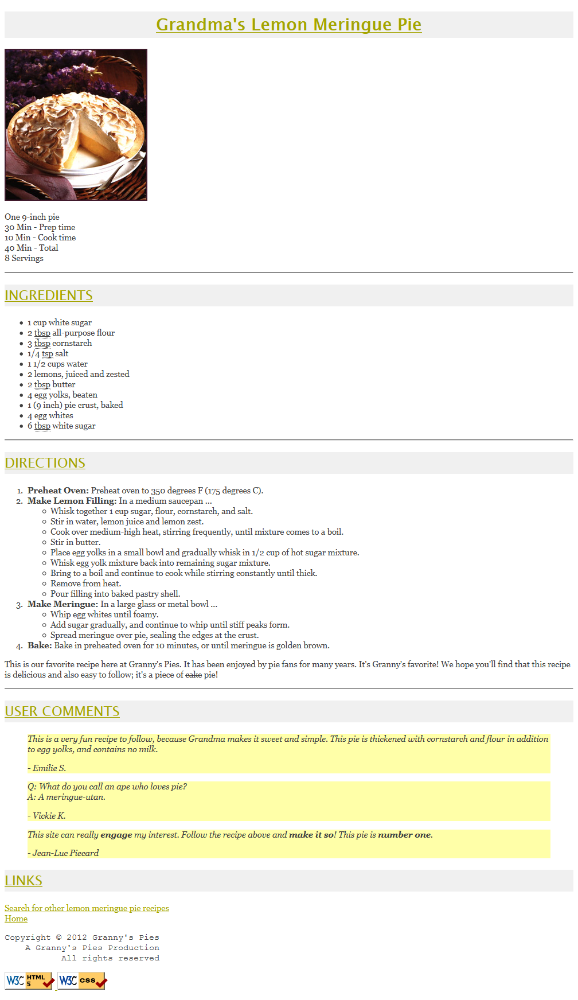

Due: September 1, 2016
This assignment tests your understanding of basic HTML and CSS. You will create several files related to a recipe web site for a fictional pie company named Granny's Pies. Turn in the following files:
For full credit, your files must be uploaded to the web and must match the guidelines in this document. Index Page:The first part of your task is to create a front page for this web site, stored in a file named index.html. Your front page must contain a link to pie.html. The file must also be at least 20 lines long and must contain at least 4 different HTML elements in its body. It also may not significantly borrow content from your pie.html. Otherwise, this front page can have any appearance you like. If you like, you may use an optional CSS file with this page named index.css and submit it with your other files. Be creative! We may show some students' pages in class. Pie Recipe Page:The second part is to recreate a specific web page of a recipe for lemon meringue pie, stored in a file named pie.html. Unlike index.html, this page must exactly match the appearance specified in this document. Provided Output Text:You don't need to type in all of the text of the pie web page, only the HTML tags. There is a provided text file here that you can copy and paste into your text editor to get started. Then you can add the appropriate HTML tags to the file and save it as your .html page. Appearance and Behavior Details:The pie web page's title text should be Grandma's Lemon Meringue Pie . The overall page's body should have a white background. Text in the body should have a foreground color of #404040 (red=64, green=64, blue=64) and use an 11pt font. The font families for page text are Georgia, Garamond, or any serif font available on the system. Any links on the page should use the color #A4A400 (red=164, green=164, blue=0), matching the color of the page headings. In the Ingredients list, the underlined words "tbsp" and "tsp" are abbreviations for "tablespoons" and "teaspoon" respectively. When the user hovers the mouse over these abbreviations, the full word should appear as a tooltip. At the end of the Directions section, the deleted word "cake" with a strike-out line through it is replaced by the word "pie". After the Links section there is a short copyright notice that appears as a section of pre-formatted text in a monospace font. The text is spaced such that the last letter lines up on horizontally for each of the three lines. Appearance and Behavior Details (continued):The names of the four major steps of the recipe directions (such as "Preheat Oven") are strongly emphasized. The quotations from the users appear in an italic font as indented blocks with background color #FFFFA8 (red=255, green=255, blue=168). Some words in the last quote are bolded for emphasis. The picture of the pie and the W3C validator images at the bottom come from the following images, respectively:
The page bottom has four links. The "Home" link should go to your index.html page. Use a relative URL and assume it is located on the same site and directory as pie.html. The "Search for other lemon meringue pie recipes" text, "W3C HTML5" button, and "W3C CSS" button should link to the following web pages, respectively: All other decisions about styling on the page are left to the web browser. Any styles mentioned previously that are the same as browser defaults do not have to be explicitly included in your CSS style sheet. The screenshot in this document was taken on Windows XP using Firefox, which may differ from the appearance on your system. Extra Features:In addition to the previous required features, you must also complete at least two (2) of the following additional requirements in your pie page. These are features that may have not been covered in detail in lecture; you will have to explore your resources such as your textbook, lecture slides, or online references to learn how to complete these features. If you want to complete more than two of the extra features below, that is fine, but only two are required.
Near the top of your HTML file, put a comment saying which extra features you have completed. As much as possible, you should implement these changes by modifying your CSS code rather than your HTML. Some of the CSS properties necessary will not have been covered in class, so you must learn them yourself. Try using the textbook or Google. There are some good HTML and CSS references such as the following sites: A screenshot of the expected output for the extra features is available here. Implementation and Grading:For full credit, your pie.html page must pass the W3C HTML5 validator with no errors (a green bar). (Your page is fine as long as you see the green bar and text "This document was successfully checked as HTML5!") Choose appropriate HTML tags to match the structure of the content on the page. Do not express style information in HTML with inline styles or presentational HTML tags such as b or font. You may not use any HTML tables in your pie.html page. You only need to worry about your page's appearance in standards-compliant browsers such as Firefox or Chrome. You will not be tested in Microsoft Internet Explorer or other browsers that do not comply to web standards. Express all stylistic information on the page using CSS defined in recipe.css. For full credit, your style sheet must successfully pass the W3C CSS validator. Part of your grade comes from expressing your CSS concisely and without unnecessary or redundant styles. For example, if the page uses the same color or font family for multiple elements on the page, you must group those elements into a single CSS rule, so that it would be possible to change the page's color/font by modifying a single place in the CSS file. Outside of extra features, do not use HTML or CSS constructs that have not been discussed in lecture or the slides, through Chapters 2-3 of the textbook. We discussed how to use HTML class and id attributes to target elements for styling. Do not overuse such attributes in your HTML unnecessarily. If there is already a suitable tag for representing a given piece of content, favor the use of that tag rather than a less appropriate tag with a class or id attached for styling purposes. Fromat your HTML and CSS nicely so that it is as readable as possible, similarly to the examples shown in class. Also place a comment header in each file containing your name and section and a brief description of the assignment and the file's contents. You must properly use whitespace and indent your HTML and CSS code following examples shown in class. To keep line lengths manageable, do not place more than one block element on the same line or begin any block element past the 100th character on a line. For reference, our solution has 135 lines of HTML and 45 lines of CSS, though you do not need to match this exactly. The majority of the points for this assignment will be for the pie.html and its recipe.css files. The index.html will also be graded, but it will be worth fewer points. The main stylistic constraint on your index.html file is that it should pass the W3C HTML5 and CSS validators. Beyond that it can contain any non-obscene content you like, even content that uses material we have not yet learned in lecture. Please do not link to external resources (other than image files or index.css or recipe.css) from your index.html page. Part of your grade will also come from successfully uploading your files to the nike server. You should place your files into your public web space (public_html directory) in a subdirectory named project1, so that it is possible to navigate to your page by entering the following URL into the browser:
If your page is not available at exactly this URL (case-sensitive), you may not receive credit for this part of the assignment. Please note that uploading your files to nike, while part of your grade, is NOT the way to turn in your program; turn in your program through the nike server submit command. Create a directory called wp4300 in your home directory on nike. You will use this directory to implement projects in this course. In wp4300, create a sub-directory project1. You should place your files into the project1 directory. Submit your project1 directory to cs4300b on nike. You must use the submit command to submit your work, as shown below: $ submit project1 cs4300bImportant: You should execute the submit command while being in the parent directory of project1, i.e. wp4300 (the current directory must be wp4300), or use the absolute path name to project1. |
{kind=link}
{kind=link}
{kind=link}
{kind=link}
{kind=link}
{kind=link}